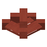

Red Terracotta Top Roof
mcwroofs:red_terracotta_top_roof
英文名: Red Terracotta Top Roof命名空间 ID:
mcwroofs:red_terracotta_top_roof类型: 方块所属模组: Macaw's Roofs资料检索: 🔎 在 MC百科 搜索「Red Terracotta Top Roof」合成获得 (1)
原始 JSON
{
"type": "minecraft:stonecutting",
"ingredient": {
"item": "minecraft:red_terracotta"
},
"result": {
"count": 1,
"id": "mcwroofs:red_terracotta_top_roof"
},
"group": "roofs"
}